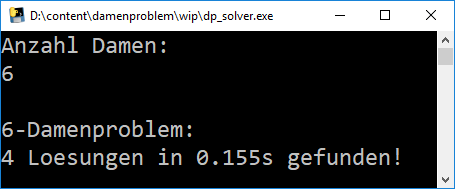

Das Damenproblem ist eine schachmathematische Aufgabe, in dem es darum geht, n Damen auf einem Schachbrett der Größe n×n zu platzieren ohne, dass sie sich gegenseitig bedrohen. Zum Lösen des Problems wird das Schachbrett zunächst als Graph konstruiert, die Kanten sind entsprechend der Bewegungsmöglichkeiten einer Dame gesetzt. Anschließend lößt ein Bruteforce-Algorithmus das gegebene Problem.
Nach dem Starten der dp_solver.exe kann die Anzahl der Damen eingeben werden, für die das Problem gelößt werden soll. Ist die Berechnung abgeschlossen, wird die Anzahl der Lösungen sowie die verstrichene Zeit angezeigt. Die errechneten Damenpositionen der einzelnen Lösungen werden als Textdatei im gleichen Verzeichnis wie das Programm abgepeichert.
Von mir ermittelte Werte: (9 und mehr zu rechenintensiv)
| Anzahl Damen | Anzahl Lösungen | Benötigte Zeit |
|---|---|---|
| 1 | 1 | 0.0s |
| 2 | 0 | 0.0s |
| 3 | 0 | 0.0s |
| 4 | 2 | 0.001s |
| 5 | 10 | 0.012s |
| 6 | 4 | 0.181s |
| 7 | 40 | 4.11s |
| 8 | 92 | 130.32s |
Zur Visualisierung der der in den Textdateien (z.B.: 8 Damen Positionen.txt) abgelegten Positionen kann dp_viewer.exe verwendet werden.
Nach dem Starten von dp_viewer.exe öffnet sich ein Dateidialog, in dem eine beliebige Positionsliste ausgewählt wird. Anschließend öffnet sich ein Fenster, auf dem die erste mögliche Lösung grafisch dargestellt wird. Mit den Knöpfen "Zurueck" und "Weiter" kann durch die Lösungen navigiert werden.
Hinweis: Dies ist eine interaktive Grafik, die Knöpfe "Zurueck" und "Weiter" sind voll funktionsfähig, einfach anklicken um weitere Positionen zu sehen!